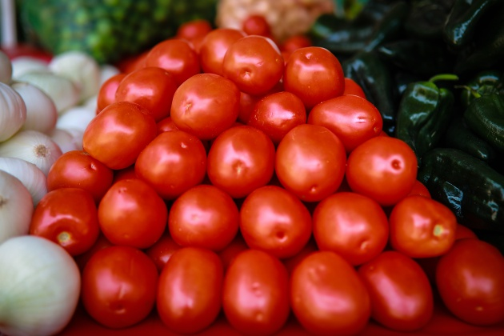
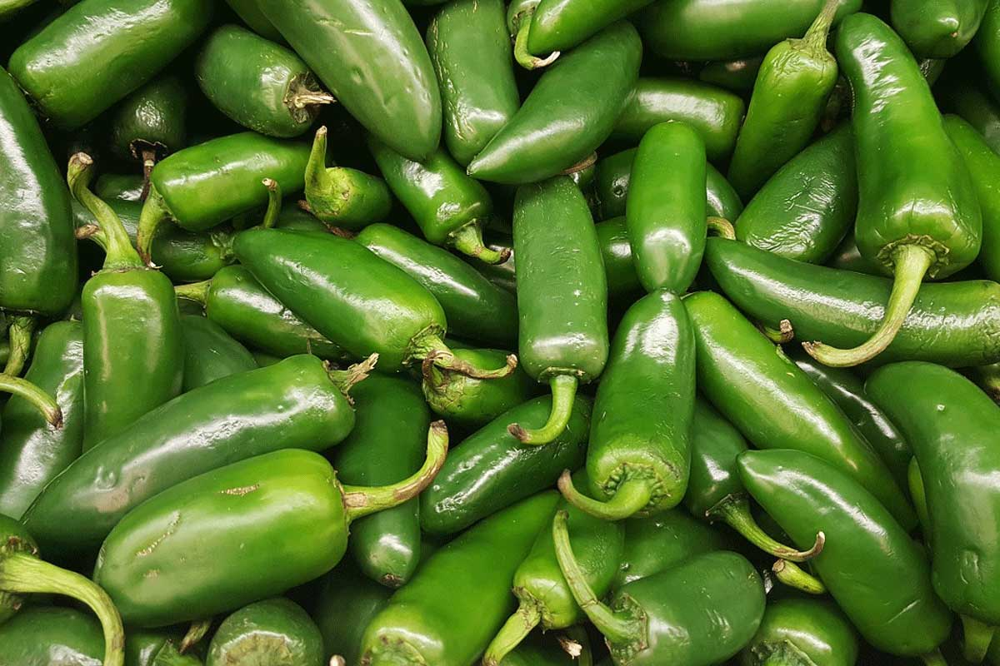
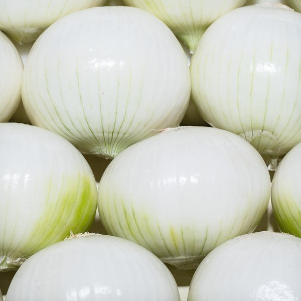
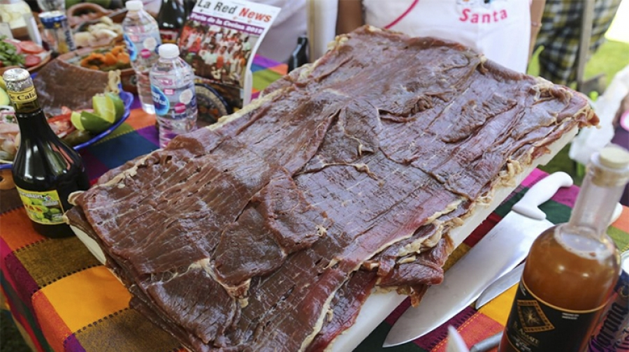
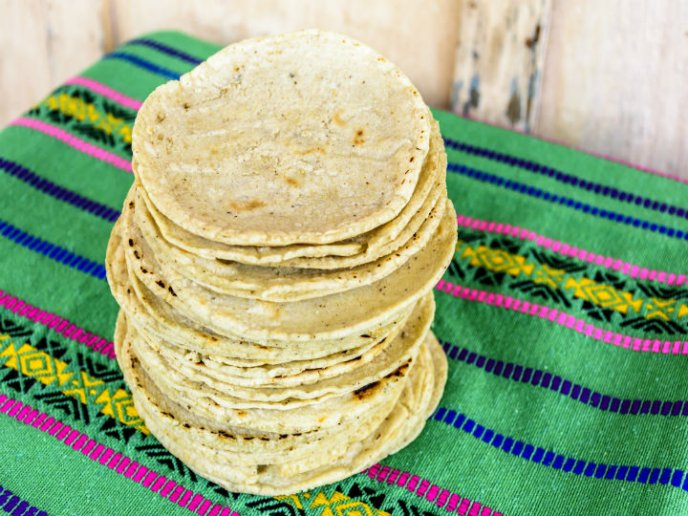
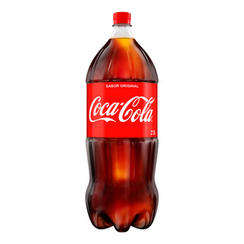
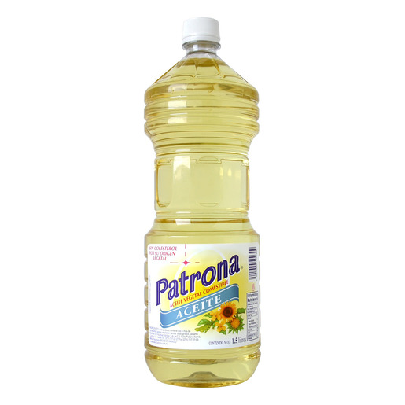

Desafio 1
Soy la lista del super!
Frutas y verduras
Tomate

Tomate rojo
Chiles

Chile huachinango
Cebolla

Cebolla blanca
Carnes y lacteos
Cecina de res

Cecina de res
Otros
Tortillas

Tortillas de maiz
Refresco

Refresco coca cola
Aceite

Aceite Patrona